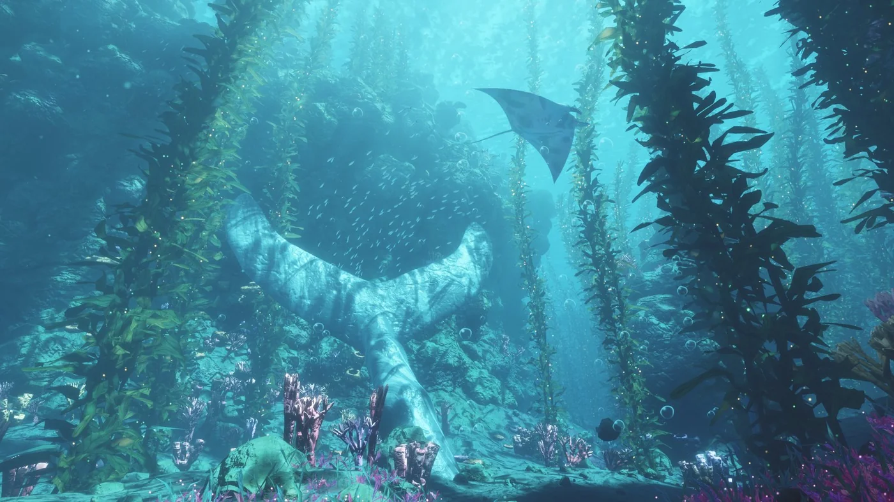

A field guide to the deep

Leave the kelp forest with a survey, recover a sample from the shipwreck and light the grotto. This three-station expedition returns to the underwater world of Abyssal Garden, created by Maksymilian Dendura.

Leave the kelp forest with a survey, recover a sample from the shipwreck and light the grotto. This three-station expedition returns to the underwater world of Abyssal Garden, created by Maksymilian Dendura.